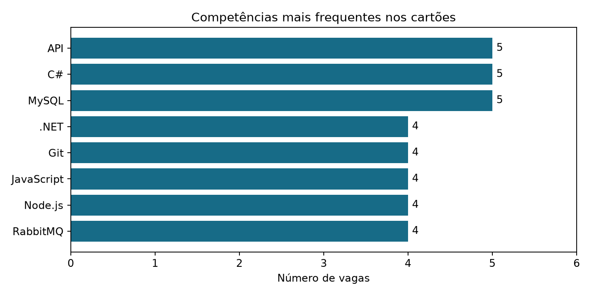

Abstract. This exploratory study analyzes technical skills and mentions of artificial intelligence (AI) on two public listing pages of the ProgramaThor job board. A Python scraper extracted job titles and skill tags. After excluding listings marked as external and deduplicating by URL, 19 ads remained. Three ads (15.79%) contained explicit AI-related terms. API, C# and MySQL led the tag counts with five ads each. These findings describe a snapshot of one platform.
Resumo. Este estudo exploratório examina competências técnicas e menções à inteligência artificial (IA) em duas páginas públicas da ProgramaThor. Um coletor em Python extraiu títulos e etiquetas de competências. Após excluir vagas sinalizadas como externas e remover duplicatas por URL, restaram 19 anúncios. Três anúncios (15,79%) apresentaram termos explícitos relacionados à IA. API, C# e MySQL lideraram a frequência das etiquetas, com cinco anúncios cada. Os resultados descrevem um recorte de uma plataforma.
Anúncios de trabalho dão visibilidade às tecnologias que empresas associam a diferentes cargos. A presença de IA nesses anúncios pode aparecer no nome da função ou como uma competência adicional em cargos de desenvolvimento. Este trabalho pergunta quais etiquetas técnicas são mais frequentes em um recorte da ProgramaThor e qual parcela dos anúncios contém menções explícitas a IA.
Em 19 de novembro de 2026 foram obtidas as duas primeiras páginas da listagem pública de vagas da ProgramaThor. O coletor percorre a paginação e usa BeautifulSoup para extrair do HTML cargo, empresa, local, etiquetas, URL e página de origem. A amostra inclui cartões com título, empresa e etiquetas, exclui cartões marcados como externos e utiliza a URL como chave de deduplicação. A primeira página contribuiu com 12 vagas e a segunda com sete.
O Pandas contabiliza cada etiqueta uma vez por vaga, ignorando diferenças de maiúsculas e minúsculas. A ocorrência de IA é uma variável binária. Foi classificado como positivo o anúncio cujo título ou etiquetas continham pelo menos um termo do vocabulário utilizado, como IA, AI, inteligência artificial, machine learning, deep learning ou LLM. Os percentuais usam o total de 19 anúncios como denominador.
API, C# e MySQL lideraram o ranking, com cinco ocorrências cada (26,32%). Outras competências, como Git, JavaScript e Node.js, apareceram em quatro anúncios cada (21,05%). O gráfico exibe as oito primeiras etiquetas por frequência e usa ordem alfabética para desempates.

Foram observadas menções a IA em três anúncios (15,79%). Dois casos apareceram no título, em cargos de AI Engineer e de engenharia de machine learning. O terceiro apareceu como etiqueta de agentes de IA em uma vaga full stack. A diferença ilustra como buscar apenas cargos com IA no título deixaria de detectar um dos três exemplos.
A amostra é pequena, restrita a uma plataforma e a um único momento. A análise cobre os títulos e as etiquetas públicos dos cartões. A exigência formal de uma tecnologia depende da descrição completa e do contexto. O vocabulário escolhido pode deixar passar referências implícitas, e o desenho do estudo não mede evolução no tempo.
No recorte, API, C# e MySQL empataram na liderança e aproximadamente uma em cada seis vagas mencionou IA pelo critério adotado. A coleta paginada e a contagem reproduzível permitem repetir o procedimento com novas listagens. Uma extensão seria comparar períodos e verificar as menções na seção de requisitos de cada anúncio.
ProgramaThor (2026). Vagas para programadores e desenvolvedores. Listagens 1 e 2. Consulta em 19 nov. 2026.
O Codex auxiliou na implementação e revisão do código, na análise exploratória e na redação do artigo e da apresentação. Os resultados numéricos foram calculados pelo script a partir das páginas coletadas.